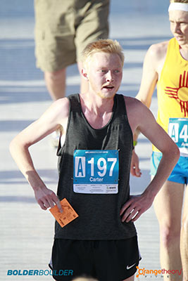
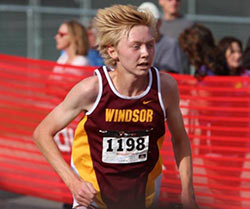
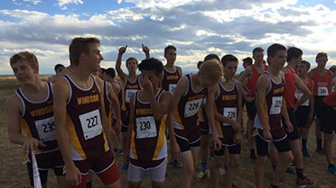

My Story
About Me
So who am I? I’m Carter Campbell. Currently I am a senior in college pursuing my bachelor’s degree in Computer Science. I have a big interest in game development and creation, specifically in the creative aspects that are involved with the creation of a new IP from the ground up. However, aside from my career goals and college motivation, my life revolves mainly around one passion. Running. I love running much more than one would expect. I run almost every day and never quite get sick of it. Many of my friends know me as “the runner guy” due to the amount I run.
I have tried many different kinds of activity to stay in shape. This includes running, cycling, swimming, weight-lifting, and many more. There is something about running that has always drawn me back more than the others. Many say that running is a love hate relationship with no in between, and I can definitely say that I love it. ( Raw Image shown to the left).
Where It Began
With my passion of running comes many years of experience with it. I have been running since I was in eighth grade in 2012. I’ve been running for almost seven years now. I got into running after seeing my brother join the Windsor High School cross country team his junior year. I watched him run for the team for a year, and decided I would give cross country a shot also. Summer was coming to and end, and sports registration was coming fast. It also went right past me as fast as it came. My interest for the sport was nowhere near what it was when I saw my brother, so I decided to skip cross country. Another year of watching my brother run both cross country and track passed by, and this time I was sure I was going to join. The most I did to prepare for the eighth grade cross country season was working my way up from scratch to being able to sustain running for a 5k. It was a huge accomplishment for me, as it was my very first running experience.
The cross country season started, and I fell in love with the team environment and competing. I enjoyed my cross country and track experience, however I was anxious for moving into high school racing. This quickly passed as the high school environment was even more thrilling and competitive than middle school. Ever since then, I haven’t stopped running and today I’m running more than I have in my life. It seems as if every day after a run, I can’t wait to get back out there to see what I can do.
Why I Run
The most often question that I am asked is, “Why do you like running so much?” After many years of being asked this question, I still don’t think I have a clear cut answer. There are so many reasons why I like to run so much, it’s extremely hard to boil it down into a simple response.
The first thing that comes to mind when I think about why I run is the fact that I simply enjoy it. After everything that comes with running, if I didn’t enjoy it, then I wouldn’t do it. I am the type of person that is goal oriented, but also looks for instant gratification. I enjoy the thought and feeling of being fit and healthy. I never really have to watch what or how much I eat. I enjoy being able to experience the calm morning every day as the sun rises. There are many perks with being a runner, and these only name a few. Every day when I go out for a run, I know that I am getting better, even if by a little bit, but I also have instant gratification of finishing a run.
As for an answer that isn’t so cut and dry, I feel like I run because it serves as a gateway for so many positive aspects in life. Running is my form of meditation and stress relief. Going through hard parts and rough patches in life have been significantly easier because of running. I get to do something I enjoy every day to take my mind off of the realities that come with life. I am allowed pure solitude with no one else but my thoughts, and running has allowed me to work through many obstacles in my life. I notice that I truly feel in a different place when running, and I’m not sure what I would do without it.